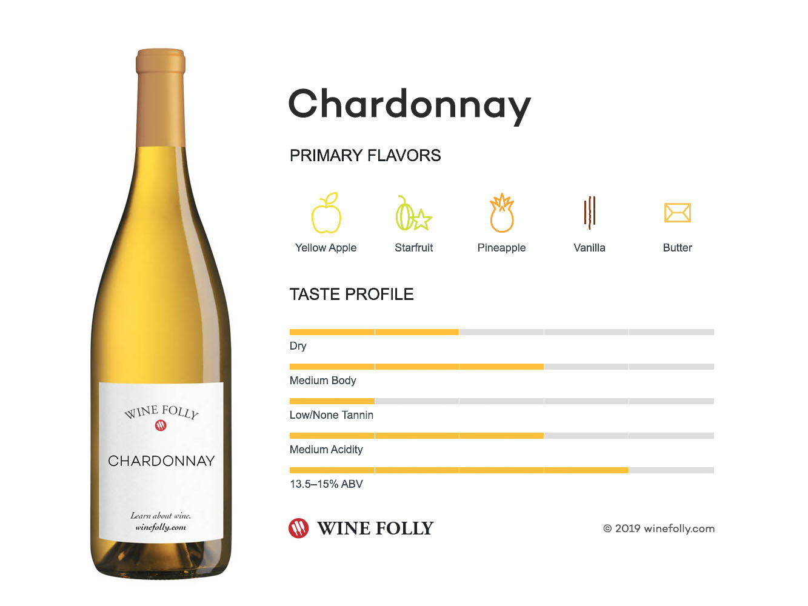

Our Chardonnay is a refined and elegant white wine, boasting a delicate balance of crisp acidity and rich, fruity notes. Hints of ripe apple, pear, and subtle citrus dance on the palate, complemented by a smooth, creamy finish. Perfectly crafted to be enjoyed on its own or paired with seafood, poultry, or soft cheeses, this wine embodies both tradition and sophistication in every sip.